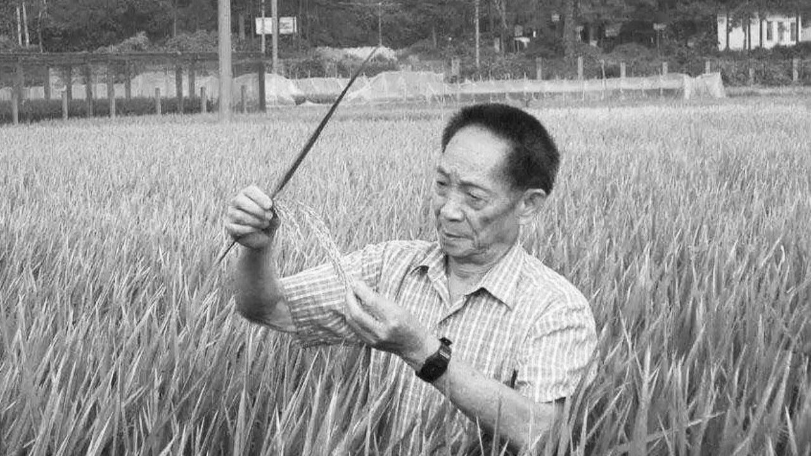

袁隆平的杂交水稻解决了世界1/5人口的温饱问题
-
1971.01—1984.06
湖南省农业科学院水稻所研究员，省杂交水稻研究协作组成员。
-
1979年任农业部科学技术委员会委员、中国作物学会副理事长、中国遗传学会理事、湖南省生物学会理事国务院授予袁隆平中国先进科技工作者与中国劳动模范的称号、湖南省遗传育种学会副理事长、湖南省农学会理事。
-
1982年8月26日，被聘为农牧渔业部技术顾问、中国杂交稻专家顾问组副组长
-
1984年6月15日，湖南杂交水稻研究中心成立，袁隆平任中心主任
-
1985年，被聘为湖南省安江农校名誉校长、西南农业大学兼职教授
- ...
-
2019年12月18日，袁隆平受聘为广东海洋大学特聘院士
-
2020年5月19日，近日，中国农民丰收节组织指导委员会正式设立“中国农民丰收节推广大使”，袁隆平受聘担任首批推广大使。
-
2020年9月28日上午，袁隆平受聘担任湖南农业大学名誉校长
-
2020年11月5日，袁隆平院士接受隆平水稻博物馆颁发的聘书，受聘任隆平水稻博物馆名誉馆长
-
2021年5月22日13点07分，袁隆平，在湖南长沙逝世，享年91岁。袁隆平是我国研究与发展杂交水稻的开创者，也是世界上第一个成功利用水稻杂种优势的科学家，被誉为“杂交水稻之父”。直到2021年年初，他还坚持在海南三亚南繁基地开展科研工作